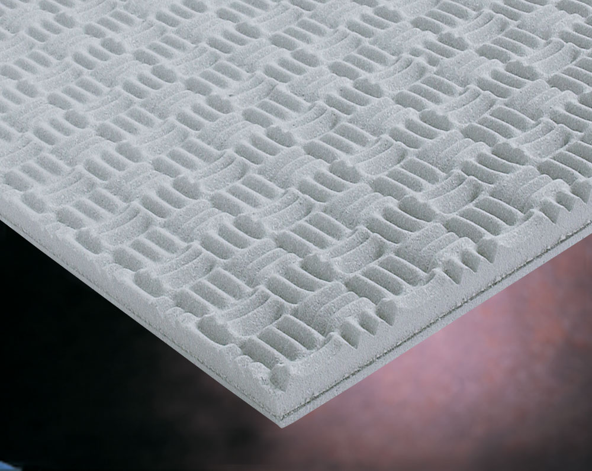

|
|
|
|

Prospec Composite panels consist of: a 1" thick layer of willtec foam to absorb noise
- followed by a 1/8" thick noise barrier to contain noise and
reduce sound transmission - backed with a willtec foam decoupler
to provide air space between the barrier and the mounting surface
for optimal noise containment.
These panels come standard with a Sonex mini sculpted surface
and a grey Hypalon coated facing for easy clean-up. Prospec
Composite is an attractive solution for absorbing and containing
noise and vibrations in many different types of settings. Prospec
Composite is a perfect fit when used:
- Over sub-standard walls between manufacturing plant and offices
- To line thin enclosures around machinery, air compressors,
or similar noise sources
- In engine compartments
We have options for polyurethane foam, 3mm thick urethane coating and
pressure sensitive adhesive available. Please call for more details.
Product
Data Sheet
Pricing
(Manufactured for adhesive mount with a square edge)
| Color |
Sheet
Size |
Thickness |
Sheets Per Box |
Coverage |
Part # |
Price Per Box |
Lt. Grey
Hypalon |
24" x 48" |
1-3/8" |
2 |
16 sq.ft. |
SPC-5 |
$150 |
Call for alternative fabrics, mounting options, edge treatments, and panel size and thicknesses. 800-801-9378
|
|
|